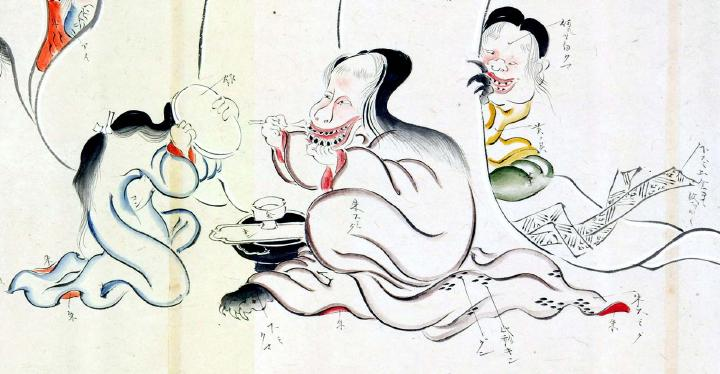

お歯黒をする化物。女官に鏡を持たせ、得意気にお歯黒を塗っている。鏡を持つ女官は、その顔が恐ろしくて見ていられないとばかりに己の顔を隠してしまっている。おかめ顔でお歯黒をし、獣のような手をした女性が、帳の外からその様子を覗いている。
著作者：玉水写／出典：親書誌：U426_nichibunken_0095：土佐光起百鬼夜行之圖；トサミツオキヒャッキヤギョウノズ／日付：2007／資源識別子：U426_nichibunken_0095_0015_0001
Copyright (c)2010- International Research Center for Japanese Studies, Kyoto, Japan. All rights reserved.